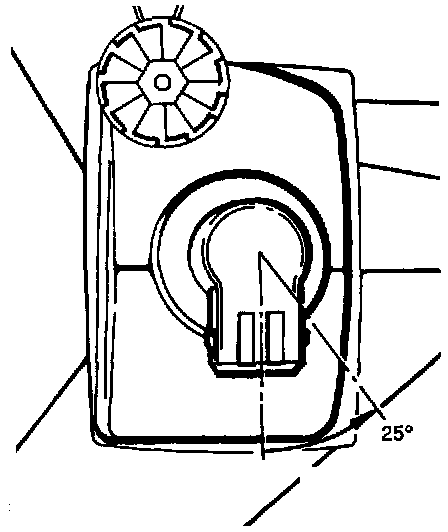

Two-Bulb Headlights
NOTE: Check and adjust headlights after performing any work that may affect headlight aim.Removing and Installing Headlight Bulb:
Removing:

- Disconnect headlight bulb connector.
- Twist bulb counter-clockwise (arrow) approx. 1/4 turn and remove from headlight housing.
Installing:
NOTE: Do not touch bulb glass with bare fingers. Skin oil will evaporate when bulb gets hot, dulling reflector and/or damaging bulb.
- Align lugs on bulb with grooves in headlight housing and install bulb into housing.
- Twist bulb clockwise approx. 1/8 turn (45 °) until bulb is locked into place, then install headlight connector.
- Check headlight aim.